并发控制：信号量
课程：2026 春季学期《操作系统原理》
讲师：蒋炎岩（jyy）
官方课程主页：https://jyywiki.cn/OS/2026/
官方讲义：https://jyywiki.cn/OS/2026/lect16.md
视频来源：Bilibili BV1yQogB2Esf
版权说明：课程讲义与幻灯片归蒋炎岩所有，采用 Creative Commons BY-NC 4.0 许可；本电子书是对课堂讲授的书面化重构，保留出处与许可说明。
导语：从“一把钥匙”到“多把钥匙”
(参考时间: 00:00)
上一讲已经建立了同步的基本方法：
mutex_lock(&lk);
while (!condition()) {
cond_wait(&cv, &lk);
}
mutex_unlock(&lk);
以及：
mutex_lock(&lk);
/* 改变共享状态 */
cond_broadcast(&cv);
mutex_unlock(&lk);
这是“万能同步模板”，但代码看起来总包含一个显式等待循环。
这一讲从一个非常自然的问题出发：
互斥锁通常只有一把钥匙。桌上有多个车位、多个手环或多个许可时，会发生什么？
答案就是 信号量（Semaphore）：
- 内部保存一个整数计数；
P/acquire/down/wait消耗一个 token；V/release/up/post产生一个 token；- token 可以表示钥匙、车位、手环、任务完成次数或可用数据数。
flowchart LR
A["互斥锁：0 / 1 把钥匙"] --> B["允许多个 token"]
B --> C["计数型进入凭证"]
C --> D["Semaphore"]
D --> E["互斥、同步、限流、生产消费"]
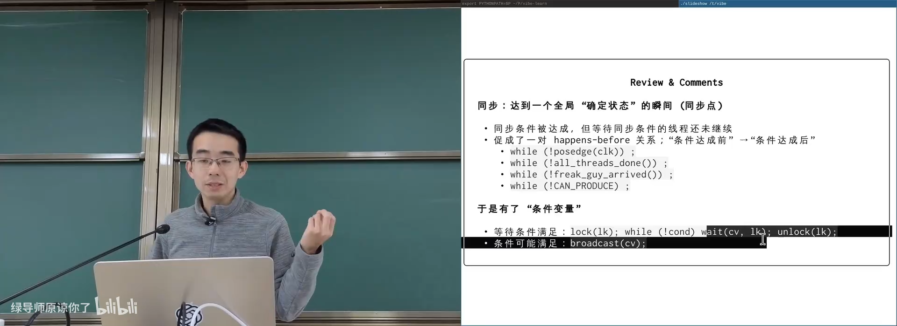
📷 回顾同步点、happens-before 与万能同步模板
回到原视频 (00:02:10)
1. 从计算图想到跨线程传递锁
1.1 DAG 的同步条件
(参考时间: 00:04)
有向无环图 G(V, E) 中：
- 节点表示计算；
- 边
u → v表示v依赖u； - 节点
v必须等所有前驱完成。
最直接的实现是给每个节点维护：
pending[v] = 尚未完成的前驱数量
前驱完成时递减，减到零时唤醒 v。
flowchart TD
A["u1"] --> P["pending[v]"]
B["u2"] --> P
C["u3"] --> P
P --> D{"pending[v] == 0？"}
D -- "是" --> E["v 可以执行"]
D -- "否" --> F["继续等待"]
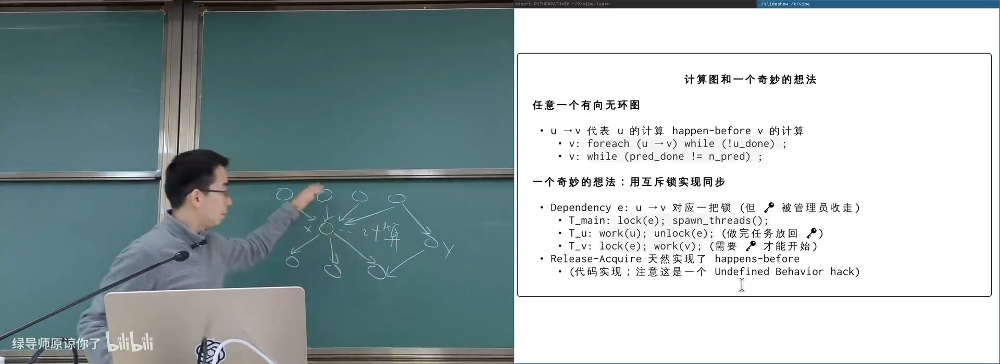
📷 DAG 节点与依赖关系
回到原视频 (00:04:50)
1.2 用互斥锁实现 happens-before
(参考时间: 00:07)
一个聪明的做法：
- 为每条边
e: u → v创建一个互斥锁； - 主线程先
lock(e)，把钥匙收走； u完成后unlock(e)，把钥匙放回；v开始时lock(e)，拿走钥匙后继续。
由于 lock acquire/release 本身具有同步语义，这自然形成了：
u 完成 → unlock(e) → lock(e) → v 开始
sequenceDiagram
participant M as Main
participant U as Task u
participant L as Edge Lock e
participant V as Task v
M->>L: lock (take key)
U->>U: work(u)
U->>L: unlock (return key)
L-->>V: lock succeeds
V->>V: work(v)
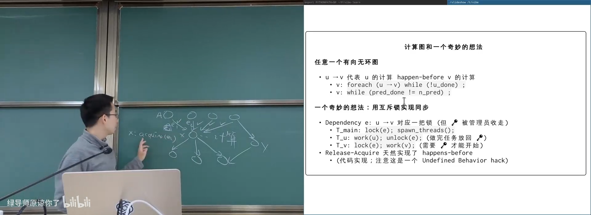
📷 主线程收走边锁，前驱完成后释放
回到原视频 (00:07:20)
1.3 逻辑正确，但属于 undefined behavior
(参考时间: 00:09)
同一把 mutex 的上锁和解锁发生在不同线程：
main: lock(&edge);
u: work(u);
u: unlock(&edge);
v: lock(&edge);
逻辑上能建立 happens-before，但 POSIX mutex 不允许跨线程按这种方式“传钥匙”。线程库的 fast path 和所有权检查可能假设 lock/unlock 配对在同一个线程中。
因此这是有趣的思路，却不是可依赖的实现。
flowchart TD
A["Main lock(edge)"] --> B["U 完成计算"]
B --> C["U unlock(edge)"]
C --> D["V lock(edge)"]
D --> E["Happens-before 成立"]
C --> F["但锁由不同线程解锁"]
F --> G["Undefined behavior"]
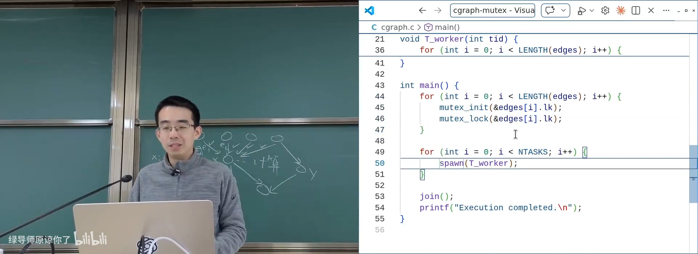
📷 跨线程传递 mutex 是未定义行为
回到原视频 (00:10:20)
1.4 Token 才是本质
(参考时间: 00:12)
真正需要传递的不是“锁对象”，而是一个 token：
- 有 token 才能继续；
- release 产生 token；
- acquire 消耗 token。
这种 token 可以理解为：
- 桌上的钥匙；
- 停车场剩余车位；
- 游泳馆手环；
- 餐厅空桌；
- 任务完成通知。
flowchart LR
A["Release：产生 token"] --> Table["共享 token 池"]
Table --> B["Acquire：消耗 token"]
B --> C["允许后续操作"]
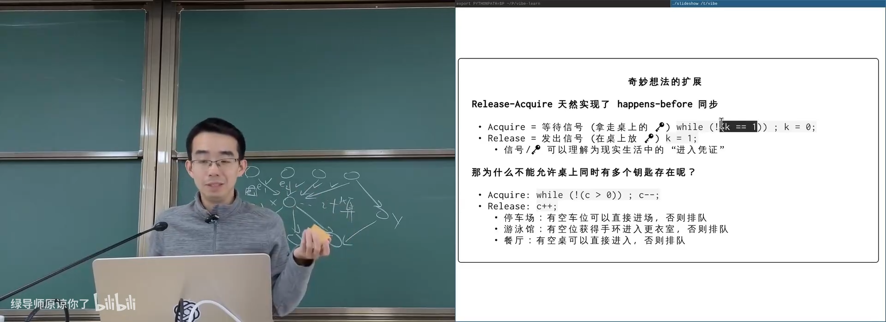
📷 Release 产生 token，Acquire 消耗 token
回到原视频 (00:12:50)
1.5 为什么不能有多个 token
(参考时间: 00:15)
现实世界天然存在计数资源：
| 场景 | 资源计数 |
|---|---|
| 停车场 | 剩余车位 |
| 游泳馆 | 剩余名额 |
| 餐厅 | 空桌数量 |
| token 桶 | 可用凭证数量 |
只要有空位，就可以直接进入；没有空位，就等待别人释放。
flowchart TD
A["资源计数 > 0"] --> B["Acquire 成功"]
B --> C["计数减一"]
C --> D["使用资源"]
D --> E["Release"]
E --> F["计数加一"]
F --> A
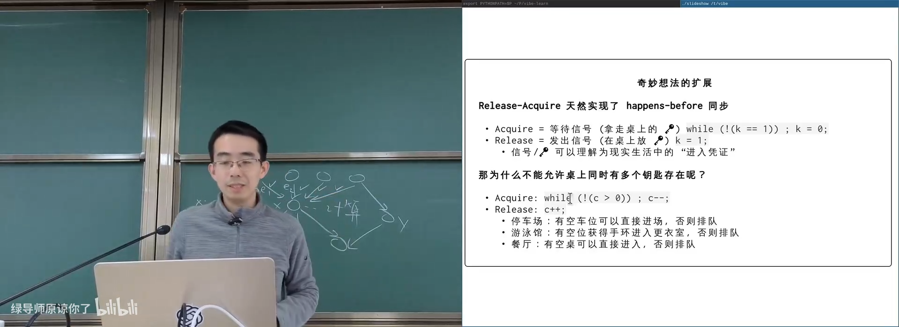
📷 停车场与游泳馆的计数型资源模型
回到原视频 (00:15:30)
2. 信号量 API
2.1 P / V 操作
(参考时间: 00:17)
信号量包含一个整数 count：
void P(sem_t *sem); /* try + decrease */
void V(sem_t *sem); /* increase */
历史名称：
P：Prolaag，尝试递减；V：Verhoog，递增；- 现代别名：down/up、wait/post、acquire/release。
flowchart TD
A["P / wait / acquire"] --> B{"count > 0？"}
B -- "是" --> C["count--"]
C --> D["成功返回"]
B -- "否" --> E["等待"]
E --> B
F["V / post / release"] --> G["count++"]
G --> H["唤醒等待者"]
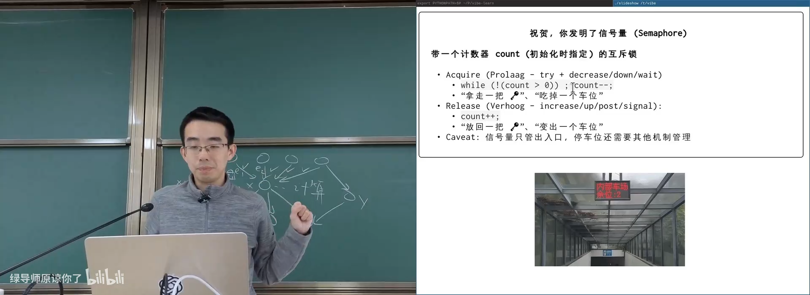
📷 P 消耗一个 token，V 产生一个 token
回到原视频 (00:17:00)
2.2 用条件变量实现信号量
(参考时间: 00:21)
void P(sem_t *sem) {
mutex_lock(&sem->lk);
while (!(sem->count > 0)) {
cond_wait(&sem->cv, &sem->lk);
}
sem->count--;
mutex_unlock(&sem->lk);
}
void V(sem_t *sem) {
mutex_lock(&sem->lk);
sem->count++;
cond_broadcast(&sem->cv);
mutex_unlock(&sem->lk);
}
这体现了信号量与条件变量的关系：
信号量可以看作一个只等待
count > 0这一种条件的特殊同步对象。
flowchart TD
A["Semaphore"] --> B["Mutex 保护 count"]
A --> C["Condition Variable 等待 count > 0"]
D["P"] --> E["wait until count > 0"]
E --> F["count--"]
G["V"] --> H["count++"]
H --> I["broadcast"]
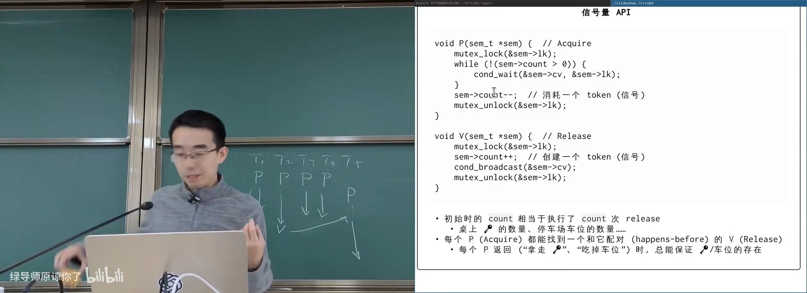
📷 用互斥锁和条件变量实现信号量
回到原视频 (00:22:00)
2.3 只有 n 个容量的资源
(参考时间: 00:18)
以 count = 4 为例：
初始：4
P1：3
P2：2
P3：1
P4：0
P5：等待
任何线程执行 V 后计数加一，等待中的 P5 才能继续。
flowchart LR
A["Semaphore count = 4"] --> B["P1/P2/P3/P4 成功"]
B --> C["count = 0"]
D["T5 P"] --> E["等待"]
F["任一线程 V"] --> G["count = 1"]
G --> H["T5 P 成功"]
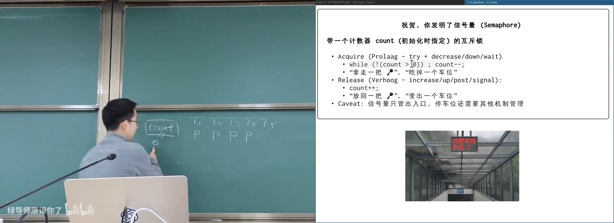
📷 多个线程竞争有限 token
回到原视频 (00:19:00)
2.4 互斥锁是信号量的特例
(参考时间: 00:23)
初始化：
sem_t mutex = SEM_INIT(1);
然后：
void lock(void) {
P(&mutex);
}
void unlock(void) {
V(&mutex);
}
只有一把钥匙时，信号量退化为互斥锁。
flowchart TD
A["SEM_INIT(1)"] --> B["P 消耗唯一 token"]
B --> C["其他线程等待"]
C --> D["V 放回 token"]
D --> B
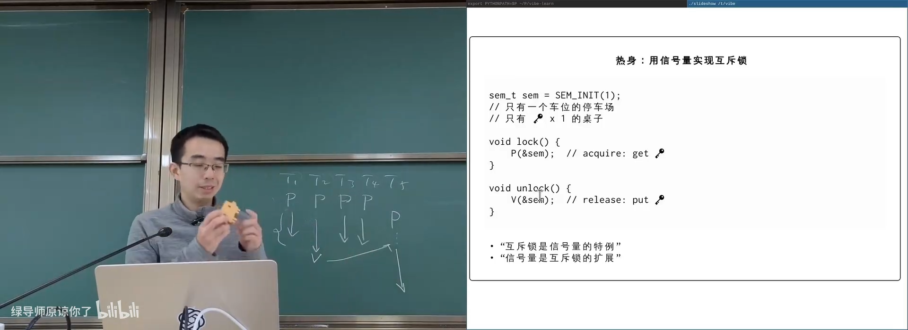
📷 `SEM_INIT(1)` 实现互斥锁
回到原视频 (00:23:20)
3. 用信号量实现同步
3.1 一次性 happens-before
(参考时间: 00:25)
sem_t ready = SEM_INIT(0);
void T_A(void) {
work_a();
V(&ready);
}
void T_B(void) {
P(&ready);
work_b();
}
P 会等待 V 产生 token。因此 work_a() happens-before work_b()。
sequenceDiagram
participant A as T_A
participant S as Semaphore
participant B as T_B
A->>A: work_a
A->>S: V
B->>S: P
S-->>B: token acquired
B->>B: work_b
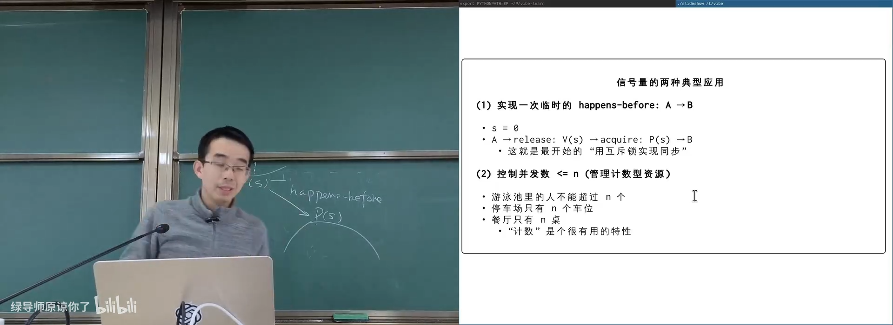
📷 信号量实现一次确定的 A → B
回到原视频 (00:25:30)
3.2 实现 join
(参考时间: 00:27)
两种等价方式。
每个线程一个信号量：
void worker(int tid) {
do_work(tid);
V(&done[tid]);
}
void join(void) {
for (int i = 0; i < n; i++) {
P(&done[i]);
}
}
共用一个计数信号量：
void worker(int tid) {
do_work(tid);
V(&done);
}
void join(void) {
for (int i = 0; i < n; i++) {
P(&done);
}
}
flowchart LR
T1["T1 V(done)"] --> S["done count++"]
T2["T2 V(done)"] --> S
T3["T3 V(done)"] --> S
T4["T4 V(done)"] --> S
S --> M["main 执行 n 次 P(done)"]
M --> J["join 返回"]
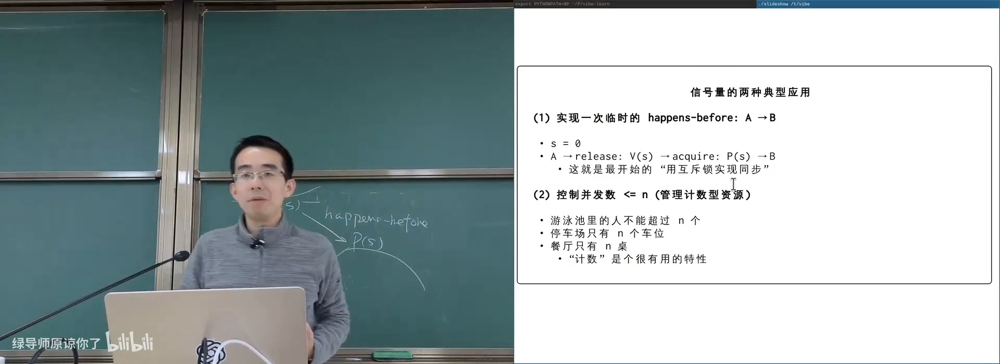
📷 用计数信号量等待所有线程结束
回到原视频 (00:28:00)
3.3 实现任意 DAG
(参考时间: 00:30)
为每个节点 v 创建一个信号量 sem[v]，初始值为 0：
void T_v(void) {
for (int i = 0; i < n_predecessors(v); i++) {
P(&sem[v]);
}
work(v);
for (u in successors(v)) {
V(&sem[u]);
}
}
节点 v 收到等于入边数量的 token 后开始计算。
flowchart TD
U["u 完成"] --> SU["V(sem[v])"]
W["w 完成"] --> SV["V(sem[v])"]
SU --> S["sem[v] count"]
SV --> S
S --> P["v 执行 n_pred 次 P"]
P --> R["v 开始计算"]
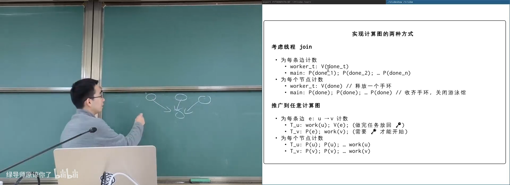
📷 使用节点信号量实现 DAG 依赖
回到原视频 (00:31:00)
4. 生产者消费者：信号量的代表作
4.1 两个计数表
(参考时间: 00:34)
sem_t empty = SEM_INIT(depth);
sem_t fill = SEM_INIT(0);
void producer(int tid) {
P(&empty);
produce_one();
V(&fill);
}
void consumer(int tid) {
P(&fill);
consume_one();
V(&empty);
}
含义：
empty中的 token 表示空槽位；fill中的 token 表示已填入的数据；- 生产者从
empty拿 token，生产后向fill放入 token； - 消费者从
fill拿 token，消费后向empty放入 token。
flowchart LR
E["empty"] -->|"P"| P["Producer"]
P -->|"V"| F["fill"]
F -->|"P"| C["Consumer"]
C -->|"V"| E
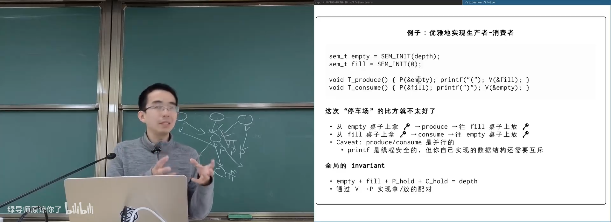
📷 信号量生产者消费者是两边对称的 token 搬运
回到原视频 (00:35:00)
4.2 全局不变量
(参考时间: 00:38)
缓冲区大小为 depth，始终满足：
empty
+ fill
+ producer_holding_token
+ consumer_holding_token
= depth
每次 P 消耗一个 token，每次 V 产生一个 token，因此总数保持守恒。
flowchart TD
A["depth 个槽位 token"] --> B["empty + fill"]
B --> C["正在生产 / 消费的线程持有 token"]
C --> D["总量始终 = depth"]
D --> E["不会超额生产，也不会无数据消费"]
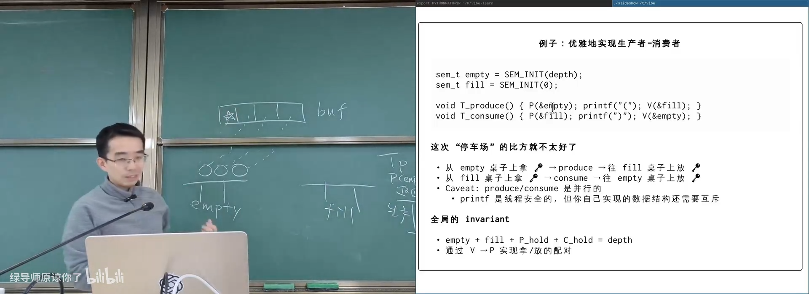
📷 缓冲区 token 总量守恒
回到原视频 (00:38:30)
4.3 生产者与消费者完全对称
(参考时间: 00:41)
生产者：
从 empty 取走一个球
→ 填充一个槽位
→ 向 fill 放入一个球
消费者：
从 fill 取走一个球
→ 清空一个槽位
→ 向 empty 放入一个球
flowchart LR
A["Producer holds empty token"] --> B["Write buffer"]
B --> C["Fill token created"]
D["Consumer holds fill token"] --> E["Read buffer"]
E --> F["Empty token returned"]
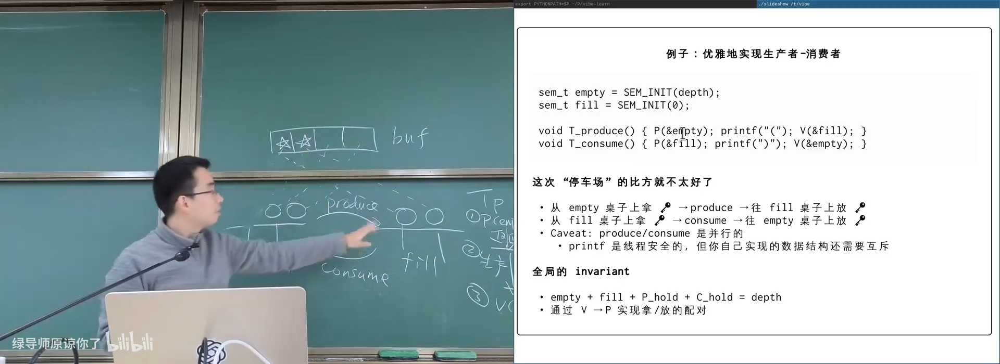
📷 生产者与消费者在 empty/fill 之间搬运球
回到原视频 (00:41:00)
5. 信号量的边界
5.1 计数不总能表达同步条件
(参考时间: 00:45)
上一讲“括号鱼”问题要求：
<><_
><>_
合法状态有“或”条件：
当前可以打印 < 或 >
单个信号量的计数无法自然表达这种全局状态条件。
可以用多个信号量并配合随机选择模拟，但代码会逐渐变成协议技巧，而不是清晰的全局条件。
flowchart TD
A["复杂同步条件"] --> B{"是否能映射为 token 计数？"}
B -- "是" --> C["Semaphore 很优雅"]
B -- "否 / 含 OR 条件" --> D["多个信号量 + 额外协议"]
D --> E["可尝试，但难理解、难证明"]
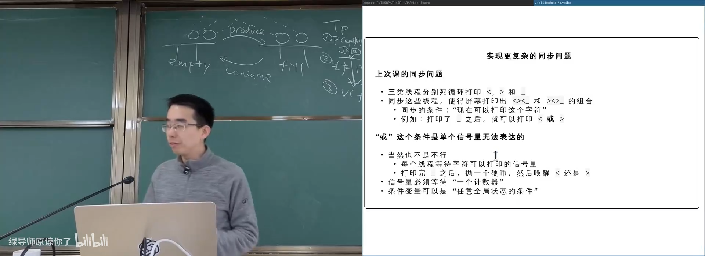
📷 括号鱼的“或条件”难以用单个信号量表达
回到原视频 (00:45:30)
5.2 close / open 让生产者消费者变复杂
(参考时间: 01:06)
给生产者消费者增加：
close()：禁止新的生产消费，等待正在执行的请求结束；open()：重新允许生产消费。
条件变量写法可以扩展共享状态：
bool closing;
int active;
等待条件变为：
not closing && has_space / has_item
信号量实现则需要额外协议协调 close、open 与现有 token，复杂度大幅增加。
flowchart TD
A["close 请求"] --> B["设置 closing = true"]
B --> C["阻止新 put/get"]
C --> D["等待 active 请求结束"]
D --> E["all_closed"]
E --> F["open 重新允许操作"]
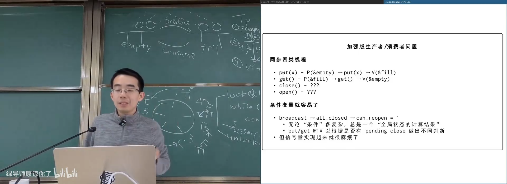
📷 增加 close/open 后，信号量实现明显不再优雅
回到原视频 (01:07:00)
5.3 用信号量实现条件变量很困难
(参考时间: 01:10)
教科书式伪实现：
void wait(cond_t *cv, mutex_t *mutex) {
cv->nwait++;
mutex_unlock(mutex);
P(&cv->sleep);
mutex_lock(mutex);
}
void broadcast(cond_t *cv) {
for (int i = 0; i < cv->nwait; i++) {
V(&cv->sleep);
}
cv->nwait = 0;
}
问题在于：
unlock(mutex)和P(cv->sleep)之间不是不可分割的。
sequenceDiagram
participant W as Waiter
participant M as Mutex
participant S as Semaphore
W->>W: nwait++
W->>M: unlock
Note over W: 尚未执行 P(sleep)
Note over S: Broadcast 的 V 先发生
W->>S: P(sleep)
Note over W: 可能抢走未来某次唤醒
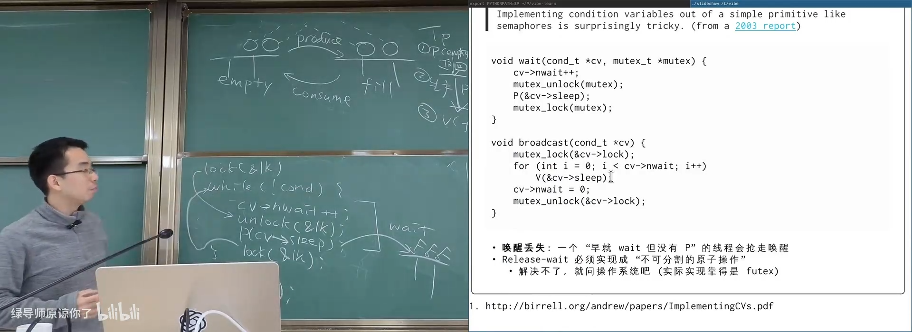
📷 信号量实现条件变量时可能出现唤醒丢失
回到原视频 (01:14:30)
5.4 实际实现依赖 futex
条件变量要求：
释放锁 + 睡眠
必须原子完成。用户态纯信号量无法保证这一点，操作系统通过 futex 或等价原语提供原子等待。
flowchart TD
A["Condition Variable Wait"] --> B["必须原子执行"]
B --> C["release mutex"]
B --> D["enqueue + sleep"]
C --> E["用户态无法单独保证"]
D --> E
E --> F["内核 futex slow path"]
6. 哲学家吃饭问题
6.1 问题定义
(参考时间: 00:48)
五位哲学家围桌而坐，每人需要同时拿到左右两把叉子才能吃饭。
每个线程：
while (1) {
think();
acquire(left);
acquire(right);
eat();
release(right);
release(left);
}
flowchart TD
P0["Philosopher 0"] --> F0["Fork 0"]
P0 --> F1["Fork 1"]
P1["Philosopher 1"] --> F1
P1 --> F2["Fork 2"]
P2["Philosopher 2"] --> F2
P2 --> F3["Fork 3"]
P3["Philosopher 3"] --> F3
P3 --> F4["Fork 4"]
P4["Philosopher 4"] --> F4
P4 --> F0
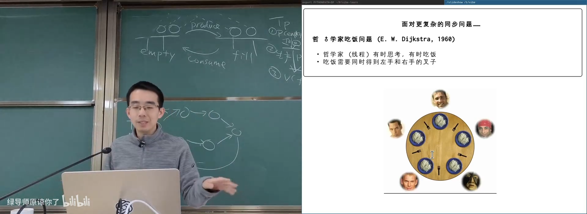
📷 五位哲学家与五把叉子的环形依赖
回到原视频 (00:49:30)
6.2 条件变量直接解决
(参考时间: 00:52)
每把叉子有可用状态：
bool avail[N];
吃饭条件：
avail[left] && avail[right]
模板化实现：
mutex_lock(&lk);
while (!(avail[left] && avail[right])) {
cond_wait(&cv, &lk);
}
avail[left] = false;
avail[right] = false;
mutex_unlock(&lk);
eat();
mutex_lock(&lk);
avail[left] = true;
avail[right] = true;
cond_broadcast(&cv);
mutex_unlock(&lk);
flowchart TD
A["lock 全局状态"] --> B{"左右叉子都可用？"}
B -- "否" --> C["cond_wait"]
C --> B
B -- "是" --> D["同时占用两把叉子"]
D --> E["吃饭"]
E --> F["释放两把叉子"]
F --> G["broadcast"]
G --> H["unlock"]
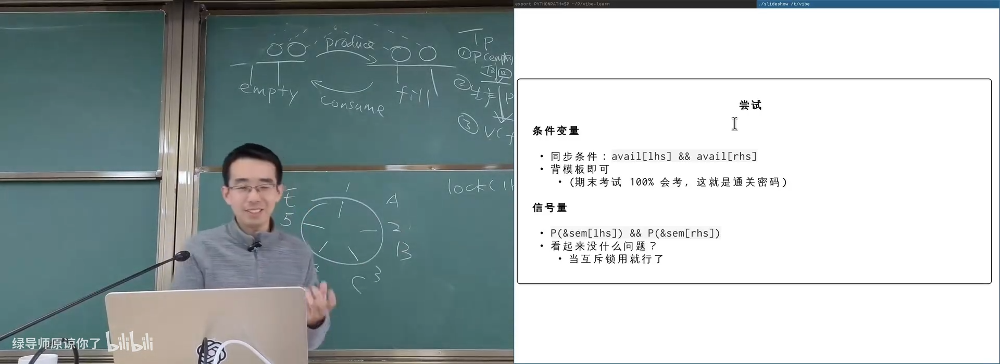
📷 用全局条件变量解决哲学家吃饭
回到原视频 (00:52:00)
6.3 最直接的信号量尝试会死锁
(参考时间: 00:55)
把每把叉子建模为一个 SEM_INIT(1)：
P(&fork[left]);
P(&fork[right]);
eat();
V(&fork[right]);
V(&fork[left]);
如果所有人都先拿左手叉子：
P(left) 全部成功
P(right) 全部等待
形成循环等待，系统死锁。
sequenceDiagram
participant P0
participant P1
participant P2
participant P3
participant P4
P0->>P0: take left
P1->>P1: take left
P2->>P2: take left
P3->>P3: take left
P4->>P4: take left
Note over P0,P4: 所有人等待右手叉子
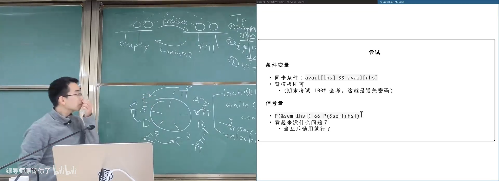
📷 五个哲学家各拿一把叉子形成死锁
回到原视频 (00:57:30)
6.4 从桌上赶走一个人
(参考时间: 01:00)
增加一个初始值为 N - 1 的信号量：
sem_t table = SEM_INIT(N - 1);
哲学家先 P(table) 才能上桌，吃完 V(table)。
五人中最多四人同时竞争叉子。四个人最多只可能持有四把左手叉子，剩下至少一把叉子可供某人完成左右配对。
flowchart TD
A["P(table)：最多 4 人上桌"] --> B["P(left)"]
B --> C["P(right)"]
C --> D["吃饭"]
D --> E["V(right)"]
E --> F["V(left)"]
F --> G["V(table)：离桌"]
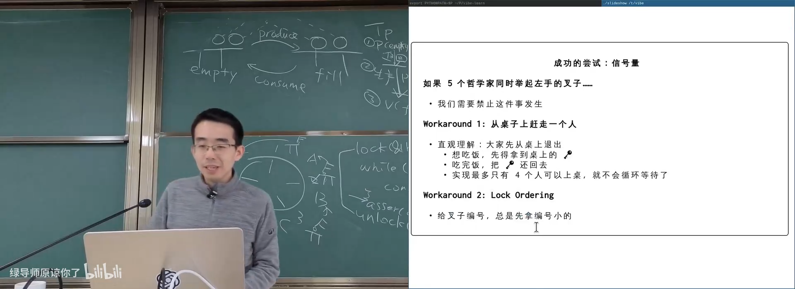
📷 用 `N-1` 个上桌许可打破死锁
回到原视频 (01:00:00)
6.5 Lock Ordering
(参考时间: 01:02)
给叉子编号，所有哲学家总是先拿编号较小的叉子：
int first = min(left, right);
int second = max(left, right);
P(&fork[first]);
P(&fork[second]);
这样不会出现所有人沿同一个环方向各持一把叉子的循环。
flowchart LR
A["Fork 0"] --> B["Fork 1"]
B --> C["Fork 2"]
C --> D["Fork 3"]
D --> E["Fork 4"]
E --> F["全局顺序"]
F --> G["所有线程按相同顺序申请"]
G --> H["避免循环等待"]
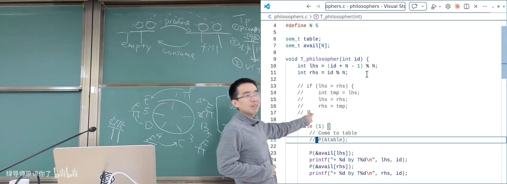
📷 给叉子编号并统一申请顺序
回到原视频 (01:02:30)
6.6 Workaround 不是通用同步
(参考时间: 01:04)
两种解决方式都可用，但正确性依赖额外证明：
- 桌上最多四人；
- 叉子全序和 lock ordering。
如果需求变成“哲学家可以申请任意一组叉子”，计数技巧就不再直接适用。条件变量仍只需写出：
所有需要的叉子都 available
flowchart TD
A["固定左右叉子"] --> B["计数 workaround 可用"]
C["任意叉子集合"] --> D["计数方案失去通用性"]
D --> E["条件变量仍可直接检查全局条件"]
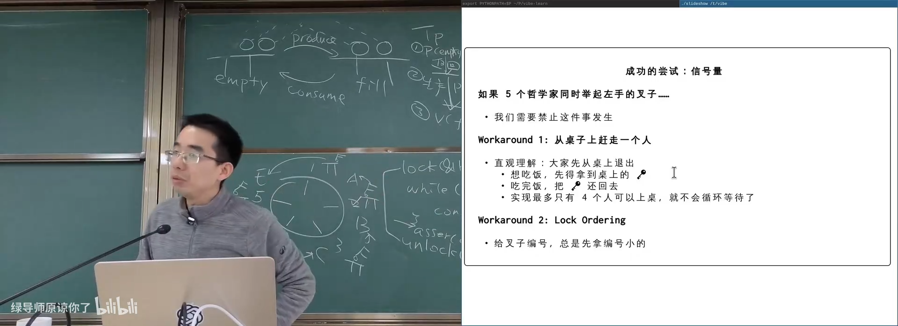
📷 哲学家问题暴露了信号量的非通用性
回到原视频 (01:05:00)
7. 用 waiter 线程统一管理复杂同步
7.1 把所有请求集中给一个调度者
(参考时间: 01:17)
如果多个信号量互相协调很难，可以引入一个 waiter / scheduler 线程：
- 所有哲学家只向 waiter 发请求；
- 叉子等全局资源由 waiter 持有；
- waiter 串行检查全局状态并决定谁可以继续；
- 请求队列本身是生产者消费者问题。
flowchart TD
P0["Philosopher 0"] --> Q["Request Queue"]
P1["Philosopher 1"] --> Q
P2["Philosopher 2"] --> Q
Q --> W["Waiter Thread"]
W --> S["串行检查全局叉子状态"]
S --> G0["Reply / Permission 0"]
S --> G1["Reply / Permission 1"]
S --> G2["Reply / Permission 2"]
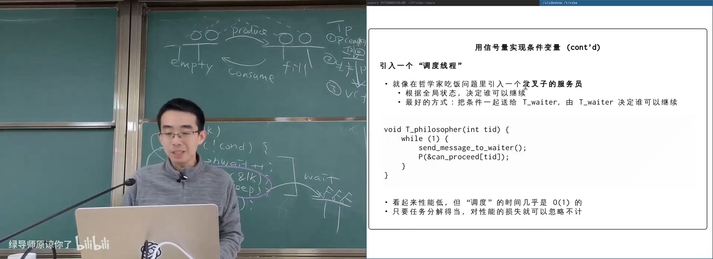
📷 用 waiter 线程集中管理哲学家请求
回到原视频 (01:17:50)
7.2 请求与许可仍然是信号量
哲学家发送请求后：
send_request(tid, needed_forks);
P(&permission[tid]);
waiter 处理完：
if (can_grant(request)) {
grant_forks(request);
V(&permission[request.tid]);
}
sequenceDiagram
participant P as Philosopher
participant Q as Queue
participant W as Waiter
P->>Q: request forks
W->>Q: consume request
W->>W: check global state
W->>P: V(permission)
P->>P: continue eating
7.3 集中调度可以加入策略
(参考时间: 01:21)
waiter 拥有全局信息，因此可以实现：
- 公平性；
- 防止饥饿；
- 控制每个哲学家的吃饭频率；
- load balancing；
- 超时与优先级。
flowchart TD
A["Waiter 全局状态"] --> B["记录请求时间"]
A --> C["记录持有资源"]
A --> D["记录历史授予次数"]
B --> E["公平策略"]
C --> E
D --> E
E --> F["选择下一个可继续线程"]
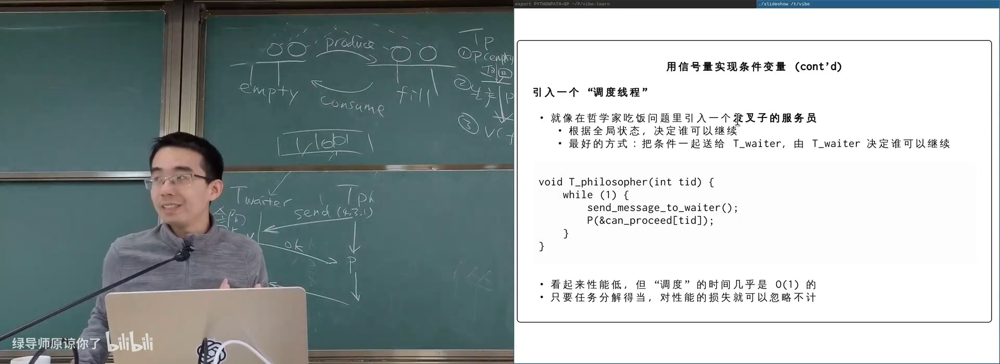
📷 集中调度器可以实施公平与资源分配策略
回到原视频 (01:22:00)
7.4 性能开销
调度决策通常是对哈希表或小数据结构的 O(1) 检查，只需几纳秒到很短时间；而真实任务可能执行数毫秒到数秒。
如果单 waiter 成为瓶颈，可以：
- 使用多个 waiter；
- 按资源分片；
- 将任务切得更细；
- 只把复杂同步交给全局调度者。
flowchart LR
A["复杂同步"] --> B["集中 waiter"]
B --> C["逻辑串行、易证明"]
C --> D["任务粒度足够大"]
D --> E["调度开销可忽略"]
E --> F["必要时分片多个 waiter"]
8. 信号量与条件变量的选择
8.1 信号量适合的场景
(参考时间: 01:24)
信号量非常适合：
- 互斥锁；
- 一次性的
A → B； - 计数型资源上限；
join；- DAG 依赖计数；
- 标准生产者消费者；
- 固定协议的请求 / 许可。
flowchart TD
A["Semaphore 适合"] --> B["Mutex"]
A --> C["One-shot happens-before"]
A --> D["Counted resource"]
A --> E["Join / DAG"]
A --> F["Producer-Consumer"]
8.2 条件变量适合的场景
(参考时间: 01:06)
条件变量适合：
- 任意全局状态条件；
- 包含 AND / OR 的复杂布尔表达式；
- close/open 等生命周期；
- 任意资源集合请求；
- 无法用单一计数表示的问题。
flowchart TD
A["Condition Variable 适合"] --> B["任意布尔条件"]
A --> C["OR 条件"]
A --> D["close / open"]
A --> E["任意资源集合"]
A --> F["动态复杂状态"]
8.3 优先保证正确性
(参考时间: 01:24)
系统实现先要正确，再优化：
- 先写清同步条件；
- 条件变量模板直接给出可证明实现；
- 如果问题天然符合计数模型，再换成信号量；
- 只有确认瓶颈后再降低唤醒范围和优化调度。
flowchart LR
A["写清同步条件"] --> B["用万能条件变量保证正确"]
B --> C{"存在自然计数模型？"}
C -- "是" --> D["改写为信号量，简化代码"]
C -- "否" --> E["保留条件变量或 waiter"]
D --> F["压力测试与性能分析"]
E --> F
9. 总结：信号量是计数资源的漂亮抽象
这一讲从计算图出发，得到了完整信号量知识体系：
- 跨线程传递 token 可以建立 happens-before；
- 互斥锁是计数为 1 的信号量；
- 信号量计数表示剩余车位、手环或许可；
P消耗 token，V产生 token；- 一次
A → B可以用SEM_INIT(0)实现； join可以用每线程一个信号量，也可以共用一个计数信号量；- DAG 可以为每条边或每个节点维护计数；
- 生产者消费者用
empty/fill两表搬运 token； - token 总量满足缓冲区不变量；
- 复杂 OR 条件、close/open 和任意资源集合更难用信号量表达；
- 哲学家吃饭问题暴露了循环等待与死锁；
- 可增加
table计数或使用 lock ordering 解决，但缺少通用性； - 用信号量实现条件变量会遇到释放锁与睡眠之间的唤醒丢失；
- 实际条件变量依赖 futex 等原子等待；
- waiter / scheduler 线程可以把任意复杂同步转化为请求-许可的生产者消费者；
- 最终应优先保证正确性，再根据 workload 优化。
flowchart LR
A["一把钥匙"] --> B["多个 token"]
B --> C["Semaphore"]
C --> D["互斥 / 同步 / 限流"]
D --> E["Producer-Consumer"]
E --> F["Complex limits"]
F --> G["Condition Variable / Waiter"]
最重要的结论是：
信号量很优雅，但不是万能同步原语。真正关键的是理解线程继续执行的全局条件；条件变量可以表达任意条件，信号量则适合其中的计数型特例。
附：官方参考与延伸阅读
以下链接来自官方讲义第 16 讲及课堂内容：
- 使用互斥锁实现计算图
- 使用信号量实现 join
- 使用信号量实现计算图
- 使用信号量实现生产者消费者
- 哲学家吃饭问题
- Implementing Condition Variables with Semaphores
阅读材料：
- Operating Systems: Three Easy Pieces 第 31 章，Semaphores。
官方课程资料：
版权与署名：本讲课程材料由蒋炎岩（jyy）编写。课程讲义与幻灯片采用 Creative Commons BY-NC 4.0 许可；本电子书保留课程出处、作者署名与许可说明。